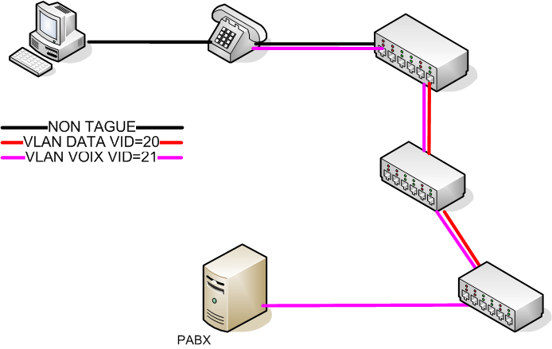

Mes Projets
Projet migration TOIP
Début octobre, nous avons entrepris, mon tuteur et moi, la migration des différentes annexes du ministère de la culture en TOIP, remplaçant l'ancien système de téléphonie. Après la migration, le système fonctionnera via des câbles réseau RJ45, permettant à la fois un débit de données élevé et l'alimentation des téléphones.
Projet mise en place de NAS pour DHCP et serveur de fichiers
Dans ce projet, notre objectif était de retirer les serveurs de toutes les annexes du ministère de la culture pour installer des NAS Synology, afin d'avoir un seul serveur DHCP à Rennes, gérant chaque NAS depuis Rennes.
Nous avons d'abord tester de connecter un NAS au domaine et a l'AD pour permettre de l'avoir dans le reseaux ce connecter via nos identifiants Administrateur

Projet changement antivirus sur tout le perimetre
Dans ce projet, notre objectif était de mettre a niveau l'antivirus de l'ancienne version Fsecure vers la nouveklle version Withsecure sur tout le perimetre de la drac pour cela moi et mon responsable avons du installer la console d'administration pour ensuite lancer la migration sur tout les postes de mon perimetre via les differente OU de l'AD.